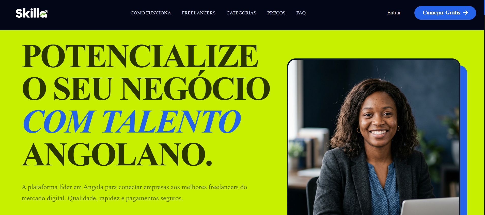

SKILLA.
Uma plataforma freelance voltada ao mercado angolano para conectar clientes e freelancers com mais confiança, organização e segurança nos pagamentos.
PROBLEMA
- Baixa confiança entre clientes e freelancers.
- Comunicação, ficheiros e prazos dispersos entre WhatsApp e redes sociais.
- Pagamentos sem garantias para ambas as partes.
- Falta de disputas, auditoria e rastreabilidade financeira.
PROCESSO
- 01Mapeamento do fluxo: job → proposta → contrato → entrega → aprovação/disputa → avaliação.
- 02Modelagem de dados para auditoria, histórico e transações.
- 03Regras para retenção, liberação, reembolso e expiração.
- 04Desenvolvimento modular: perfis → jobs → contratos → financeiro → chat → automações.
SOLUÇÃO
- Wizard de jobs em 5 etapas com rascunhos.
- Sistema de propostas com créditos.
- Wallet e pagamento escrow transacional.
- Chat em tempo real e partilha de ficheiros.
- Disputas, reembolsos e avaliações bilaterais.
- Cron Jobs para expiração de vagas e automações.
RESULTADO
Um fluxo de contratação mais seguro, centralizado e rastreável para clientes e freelancers.
SEGURANÇAMais proteção através de wallet, escrow e disputas.
CENTRALIZAÇÃOPropostas, comunicação, entregas e histórico num único ambiente.
ESCALABILIDADEArquitetura modular pronta para monetização, KYC, 2FA e integração com Multicaixa.